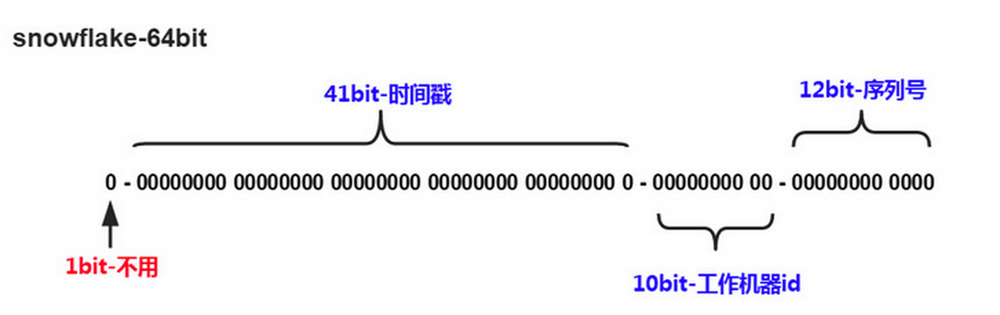

mysql|分库分表
为什么需要分?
关系型数据库本身比较容易成为系统瓶颈，单机存储容量、连接数、处理能力都有限。当单表的数据量达到1000W或100G以后，由于查询维度较多，即使添加从库、优化索引，做很多操作时性能仍下降严重。此时就要考虑对其进行切分了，切分的目的就在于减少数据库的负担，缩短查询时间。
什么时候分？
- 数据量过大，正常运维影响业务访问
- 随着业务发展，需要对某些字段垂直拆分
- 安全性和可用性
需要怎么分?
数据库分布式核心内容无非就是数据切分（Sharding），以及切分后对数据的定位、整合。数据切分就是将数据分散存储到多个数据库中，使得单一数据库中的数据量变小，通过扩充主机的数量缓解单一数据库的性能问题，从而达到提升数据库操作性能的目的。
数据切分根据其切分类型，可以分为两种方式：垂直（纵向）切分和水平（横向）切分
垂直切分
垂直切分常见有垂直分库和垂直分表两种
垂直分库
根据业务耦合性，将关联度低的不同表存储在不同的数据库。做法与大系统拆分为多个小系统类似，按业务分类进行独立划分。
垂直分表
基于数据库中的"列"进行，某个表字段较多，可以新建一张扩展表，将不经常用或字段长度较大的字段拆分出去到扩展表中。
在字段很多的情况下，通过大表拆小表，更便于开发与维护，也能避免跨页问题，MySQL底层是通过数据页存储的，一条记录占用空间过大会导致跨页，造成额外的性能开销。
另外数据库以行为单位将数据加载到内存中，这样表中字段长度较短且访问频率较高，内存能加载更多的数据，命中率更高，减少了磁盘IO，从而提升了数据库性能。
垂直切分优点
- 解决业务系统层面的耦合，业务清晰
- 与微服务的治理类似，也能对不同业务的数据进行分级管理、维护、监控、扩展等
- 高并发场景下，垂直切分一定程度的提升IO、数据库连接数、单机硬件资源的瓶颈
垂直切分缺点
- 部分表无法join，只能通过接口聚合方式解决，提升了开发的复杂度
- 分布式事务处理复杂
- 依然存在单表数据量过大的问题（需要水平切分）
水平切分
当一个应用难以再细粒度的垂直切分，或切分后数据量行数巨大，存在单库读写、存储性能瓶颈，这时候就需要进行水平切分了。
水平切分分为库内分表和分库分表，是根据表内数据内在的逻辑关系，将同一个表按不同的条件分散到多个数据库或多个表中，每个表中只包含一部分数据，从而使得单个表的数据量变小，达到分布式的效果。
库内分表只解决了单一表数据量过大的问题，但没有将表分布到不同机器的库上，因此对于减轻MySQL数据库的压力来说，帮助不是很大，大家还是竞争同一个物理机的CPU、内存、网络IO，最好通过分库分表来解决。
切分依据
根据数值范围
按照时间区间或ID区间来切分。
优点
- 单表大小可控
- 天然便于水平扩展，后期如果想对整个分片集群扩容时，只需要添加节点即可，无需对其他分片的数据进行迁移
- 使用分片字段进行范围查找时，连续分片可快速定位分片进行快速查询，有效避免跨分片查询的问题。
缺点
- 热点数据成为性能瓶颈。连续分片可能存在数据热点，例如按时间字段分片，有些分片存储最近时间段内的数据，可能会被频繁的读写，而有些分片存储的历史数据，则很少被查询
根据数值取模
一般采用hash取模mod的切分方式
优点
- 数据分片相对比较均匀，不容易出现热点和并发访问的瓶颈
缺点
- 后期分片集群扩容时，需要迁移旧的数据（使用一致性hash算法能较好的避免这个问题）
- 容易面临跨分片查询的复杂问题
水平切分优点
- 不存在单库数据量过大、高并发的性能瓶颈，提升系统稳定性和负载能力
- 应用端改造较小，不需要拆分业务模块
水平切分缺点
- 跨分片的事务一致性难以保证
- 跨库的join关联查询性能较差
- 数据多次扩展难度和维护量极大
问题
-
事务一致性问题
-
跨节点关联查询 join 问题
-
跨节点分页、排序、函数问题
-
数据迁移、扩容问题
-
全局主键避重问题 在分库分表环境中，由于表中数据同时存在不同数据库中，主键值平时使用的自增长将无用武之地，某个分区数据库自生成的ID无法保证全局唯一。因此需要单独设计全局主键，以避免跨库主键重复问题。
-
UUID UUID标准形式包含32个16进制数字，分为5段，形式为8-4-4-4-12的36个字符，例如：550e8400-e29b-41d4-a716-446655440000
UUID是主键是最简单的方案，本地生成，性能高，没有网络耗时。但缺点也很明显，由于UUID非常长，会占用大量的存储空间；另外，作为主键建立索引和基于索引进行查询时都会存在性能问题，在InnoDB下，UUID的无序性会引起数据位置频繁变动，导致分页
-
Snowflake分布式自增ID算法 
这样的好处是毫秒数在高位，生成的ID整体上按时间趋势递增；不依赖第三方系统，稳定性和效率较高
不足就在于强依赖机器时钟，如果时钟回拨，则可能导致生成ID重复。
-